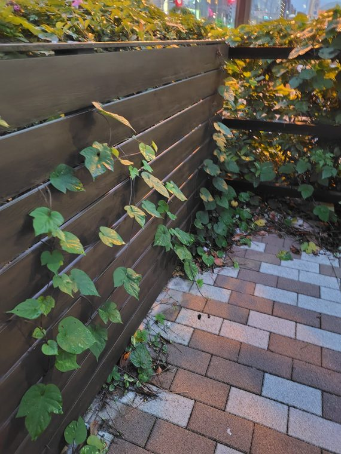
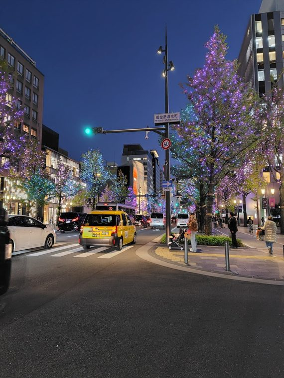
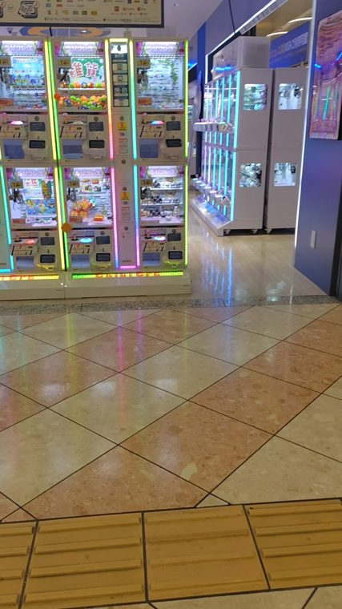
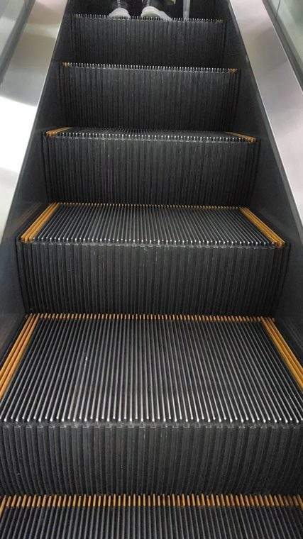
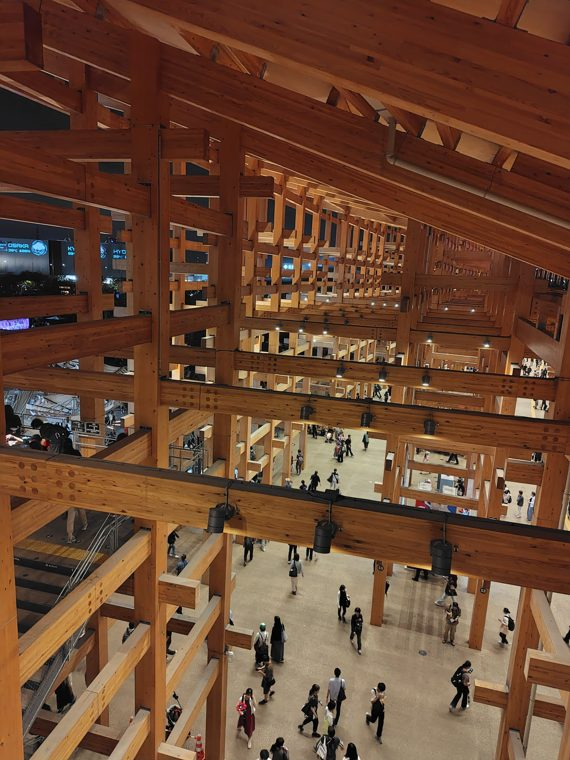
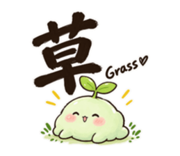
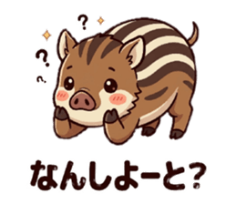

つみかず
自分が使いたいものを、まず自分で作る。
小さなWebアプリと、LINEスタンプの置き場所です。



つみかずについて
ふだんの暮らしや制作の手伝いになる小さな道具を作って、公開しています。どれもブラウザだけで動くので、インストール不要ですぐ使えます。
ここにあるアプリは、どれも自分の生活や制作の中で「これがほしい」と思ったものばかりです。派手な機能はありませんが、毎日の中でちょっと役に立つものを目指しています。
作ったアプリやスタンプへのご感想・ご相談は、LINE公式アカウントで受け付けています。
LINE公式アカウント（@380pjkcp）バナー・資料づくりのお手伝い
SNSやチラシに使うバナー画像と、PowerPoint資料の作成をお手伝いします。実績として、化粧品会社のバナー制作を1件、テスト制作から検収まで担当しました。
ご相談はLINE公式アカウントからどうぞ。返信は平日の夕方・夜、通常2日以内です。
LINE公式アカウント（@380pjkcp）お知らせ
2026年11月26日LINEスタンプ「KANJIBEAST クリスマス」の販売が始まりました。
2026年12月20日LINEスタンプ「KANJIBEAST お正月」が発売予定です。
読みもの
アプリとスタンプの、もう少し詳しい話です。
Everyday Japan 紹介 日本の日常を、写真と音で どんなアプリか、どんな場面があるか、撮影のこだわりをまとめました。 自作アプリの使い方 GoList・わたし便・すけるん工房・お買い物メモ アプリごとに、使い方を手順つきで説明しています。 LINEスタンプ制作ノート KANJIBEAST・MOJI BEASTS 漢字キャラクターの考え方と、作り方の流れを紹介します。かんがえの木
頭の中のもやもやを、木の枝のように広げて整理する思考ツールです。中心にテーマを置き、思いついたことを枝として足していきます。考えが堂々巡りしてしまうときの、頭の整理にどうぞ。
- 中心の丸に、考えたいテーマを書く
- 枝を足して、思いつくことを広げていく
- 枝ごとに「◎残す／△保留／✕切る」で判断すると、切った枝は畳まれて、木の中心が少しずつ移動します
データは使っている端末の中にだけ保存されます。サーバーには送られません。
かんがえの木 をひらく思考整理アプリ（無料・登録不要）
写真と音のアプリ
日本のふだんの風景を、写真とその場所の音で届けるアプリです。観光地のきれいな写真ではなく、通勤の電車や商店街、公園といった「ふだんの日本」を集めています。日本に来たことがある人にも、来たくても来られない人にも、もう一度あの空気を思い出してもらえたらと思って作りました。



電車や商店街、公園など、日常の風景と音のコレクション 写真をタップすると、その場所で録った音が流れます。音も含めて「その場所」だと考えて、写真と音は必ずセットで集めています。 Everyday Japan Vol. 1 — Autumn Parks
シリーズ第1弾。万博記念公園と服部緑地の秋、全15場面 横スワイプでめくる形式です。写真をタップすると、その場所で録った音が流れます。

会場で撮った写真18枚の記録ページ 2025年の大阪・関西万博で撮った、大屋根リングやパビリオンの写真です。行った日の記録としてまとめました。
暮らしのアプリ
毎日の暮らしの中で「これ、ちょっと不便」と思ったことを、そのまま道具にしたアプリです。どれも自分の生活で実際に使っているものだけを置いています。
わたし便登録したキーワードのニュースを、開くたび自動で集めるアプリ 「近畿のお出かけ」「好きなアーティストの名前」など、気になる言葉を登録しておくと、開くたびに新しい記事が集まります。キーワードは端末の中にだけ保存されます。 GoList
行きたい場所をためるリスト。タップでGoogleマップが開きます Googleマップの「保存」って、なんだか分かりづらい。そんな人のための、行きたい場所メモです。場所の名前だけでも、地図のリンクでも保存できます。 小西家（ソロ版）
ニュース・予定・買い物リストをひとつにまとめた、ひとり用の生活アプリ 朝いちばんに見るのは、天気と今日の予定と買い物リスト。それだけを1画面に集めた、自分のための生活アプリです。
工房シリーズ（制作お助けアプリ）
バナーやLINEスタンプを作る作業の中から生まれた、制作のお助け道具です。作る工程で困ったことを、次の制作が楽になるようにアプリにしました。
イロドリ工房バナー作りのためのカラーツール バナーを作るときの色選びに。色の組み合わせを試しながら、使いたい色を決めるための道具です。 すけるん工房
スタンプ・イラストの背景を透明にするツール LINEスタンプ作りの下ごしらえに。画像の背景を透明にして、白い縁取りと番号付けまでまとめてできます。 しまう工房
完成した作品を整理してしまう管理ツール 作ったバナーやスタンプの画像が増えてきたら。作品を登録しておくと、どこに何があるか見返せます。
LINEスタンプ
漢字キャラクター「MOJI BEASTS」などのLINEスタンプを販売中です。漢字の意味を、色と表情とポーズで表したキャラクターたちです。日常のあいさつに使えるシリーズもあります。




販売中のスタンプ一覧はこちら
SNS
作ったものの紹介や、日本の日常の動画はSNSでも出しています。
- Instagram：@komomo0680（アプリとバナーの紹介）
- YouTube：つみかず（日本の日常の動画）
- TikTok：@user2207431673945（日本の日常の動画）
- Pinterest：@komomo0680（作品の置き場所）